name: cover <img src="assets/img/peerigon.svg" style="width: 20vw; margin-top: 5vh;"> # Native Apps Are Deprecated .slide-cover[ State of Mobile Web<br> ] .slide-author[ Michael Jaser<br> michael.jaser@peerigon.com ] --- layout: true class: center, middle .slide-header-left[ Native Apps Are Deprecated ] .slide-header-right[ Mobile Day ] --- <img src="assets/img/peerigon.svg" width="500"/> --- <img src="assets/img/peerigon-devices.png" style="height: 30vh; margin-top: 1rem; margin-bottom: -1rem"/> > Peerigon hilft dir und deinen Freunden, Freizeitprojekte gemeinsam auf die Beine zu stellen. --- - Mobile-App - Pure JavaScript, HTML & CSS - Backend mit Node.js - Datenschutz! - Werbefreiheit! Mehr auf [peerigon.com](https://peerigon.com) --- # Agenda? --- # 1. Definition of Terms --- ## Mobile Web >"The mobile Web refers to the use of browser-based Internet services from handheld mobile devices, such as smartphones or feature phones, through a mobile or other wireless network." <small>https://en.wikipedia.org/wiki/Mobile_Web</small> --- ## Mobile Browser >"A mobile browser is a web browser designed for use on a mobile device such as a mobile phone or PDA. Mobile browsers are optimized so as to display Web content most effectively for small screens on portable devices." <small>https://en.wikipedia.org/wiki/Mobile_browser</small> --- ## Web-App >"In computing, a web application or web app is a client-server software application in which the client (or user interface) runs in a web browser." <small>https://en.wikipedia.org/wiki/Web_application</small> --- ## Mobile Web-App - Touch - Small screens --- ## Web-App vs. Website --- ## Single Page Application --- # 2. Mobile Web Recap --- ## 1994 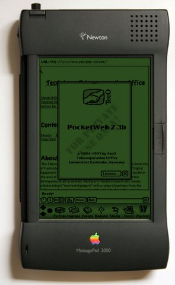<br> <small>http://www.teco.edu/pocketweb/</small> --- 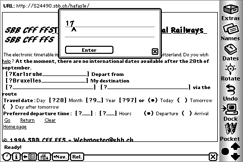<br> <small>http://www.teco.edu/pocketweb/</small> --- ## Not much... <small>http://giphy.com/gifs/the-simpsons-school-bart-XuDlhFtiWXZEk</small> --- ## 2007 --- ## iPhone <iframe width="420" height="315" src="https://www.youtube.com/embed/8Vq993Td6ys" frameborder="0" allowfullscreen></iframe> <!--<video src="./assets/Safari%20-%20iPhone%20Development%20Platform-8Vq993Td6ys.mp4" />--> <small>https://www.youtube.com/watch?v=8Vq993Td6ys</small> --- >“Developers and users alike are going to be very surprised and pleased at how great these applications look and work on iPhone,” said Steve Jobs, Apple’s CEO. “Our innovative approach, using Web 2.0-based standards, lets developers create amazing new applications while keeping the iPhone secure and reliable.” <small>http://www.apple.com/pr/library/2007/06/11iPhone-to-Support-Third-Party-Web-2-0-Applications.html</small> --- ## 2008 --- ## Android <img src="assets/img/android-robot.svg"> --- The first commercially available smartphone running Android was the HTC Dream, released on October 22, 2008. <small>http://gizmodo.com/5053264/t-mobile-g1-full-details-of-the-htc-dream-android-phone</small> --- ## [And there are more...](https://en.wikipedia.org/wiki/Mobile_operating_system) - Fire OS (Amazon) - Windows Phone - BlackBerry - Sailfish OS - Tizen - Ubuntu Touch OS - ... --- >"In 2014, more than a billion smartphones were sold and global market share was 80.7% for Android, 15.4% for iOS, 2.8% for Windows Phone and remaining 1.1% for all other platforms." <small>http://www.gartner.com/newsroom/id/2996817</small> --- <br> <img src="./assets/img/android-robot.svg" style="height:45vh;" /> --- ## What's the Browsers like on Mobile? --- ## Android --- <img src="./assets/img/android-browser.png" style="height:20vh;"/> __Android Browser__ [RIP](http://www.unwiredview.com/2013/11/21/android-4-4-kitkat-ships-without-browser-app-oems-have-to-license-chrome-or-build-their-own/)<br> <small>1.0 - 4.3 (2008 - 2013)</small> <img src="./assets/img/chrome-android.svg" style="height:20vh;"/> __Google Chrome__ <br> <small>since 4.1 (June 2012)</small> --- ## iOS --- <img src="./assets/img/safari-ios.svg" style="height:30vh;" /> __Mobile Safari__ --- ## Wait! What is a browser? --- ## Browser Architecture <img src="./assets/img/browser-architecture.png" /> <small>http://www.html5rocks.com/en/tutorials/internals/howbrowserswork/</small> --- ## Rendering Engine >The responsibility of the rendering engine is well... Rendering, that is display of the requested contents on the browser screen. - HTML - CSS - Images <small>http://www.html5rocks.com/en/tutorials/internals/howbrowserswork/</small> --- ## JavaScript Engine - JavaScript interpreter - parses and executes JavaScript code - implement ECMA-Script (5, 2015, 2016...) --- ## [Web APIs](https://developer.mozilla.org/en-US/docs/WebAPI) >"WebAPI is a term used to refer to a suite of device compatibility and access APIs that allow Web apps and content to access device hardware (such as battery status or the device vibration hardware), as well as access to data stored on the device (such as the calendar or contacts list)." --- ## [Web APIs](https://developer.mozilla.org/en-US/docs/WebAPI) - "Standard Library" - Bridge to the Operation System - accessible via JavaScript - implemented by the Browser - i.e. `AJAX`, `window`, `console.log` --- Browser = pretty complex but powerful platform --- ## What do they have in common? --- <img src="./assets/img/webkit-logo.png" /> Well... there is WebKit! --- ## WebKit >WebKit is an open source rendering engine which started as an engine for the Linux platform and was modified by Apple to support Mac and Windows. See webkit.org for more details. --- ## What do we have in common? __Safari__ - WebKit - JS-Engine: JavaScriptCore __Chrome__ - WebKit - JS-Engine: ~~JavaScriptCore~~ V8 --- ## What does it mean? - similar rendering of HTML and CSS - similar WebAPIs - different JavaScript implementations --- ## 2013: WebKit vs. Blink - [Google forked WebKit](http://arstechnica.com/information-technology/2013/04/google-going-its-own-way-forking-webkit-rendering-engine/) 2013 - the Project is called [Blink](http://www.chromium.org/blink) - used by Chromium, Chrome, Opera, ... --- ## Safari & Chrome diverged __Safari__ - WebKit - JavaScriptCore __Chrome__ - ~~WebKit~~ Blink - ~~JavaScriptCore~~ V8 --- ## Comparison __Chrome__: Blink - [CSS](http://caniuse.com/#cats=CSS): 74% - [HTML5](http://caniuse.com/#cats=HTML5): 77% - [JS: ES2015](https://kangax.github.io/compat-table/es6/) 29% __Safari__: WebKit - [CSS](http://caniuse.com/#cats=CSS): 68% - [HTML5](http://caniuse.com/#cats=HTML5): 66% - [JS: ES2015](https://kangax.github.io/compat-table/es6/) 54% --- ## Web APIs __Chrome__: [78%](http://caniuse.com/#cats=JS%20API) __Safari__: [50%](http://caniuse.com/#cats=JS%20API) __Firefox__: [83%](http://caniuse.com/#cats=JS%20API) <small>http://caniuse.com/#cats=JS%20API</small> --- 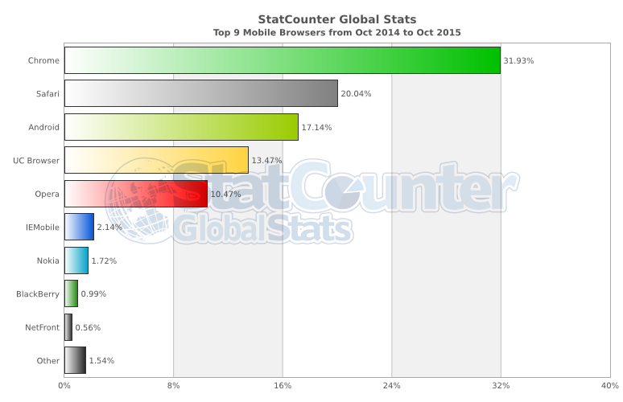 --- ## Fragmentation 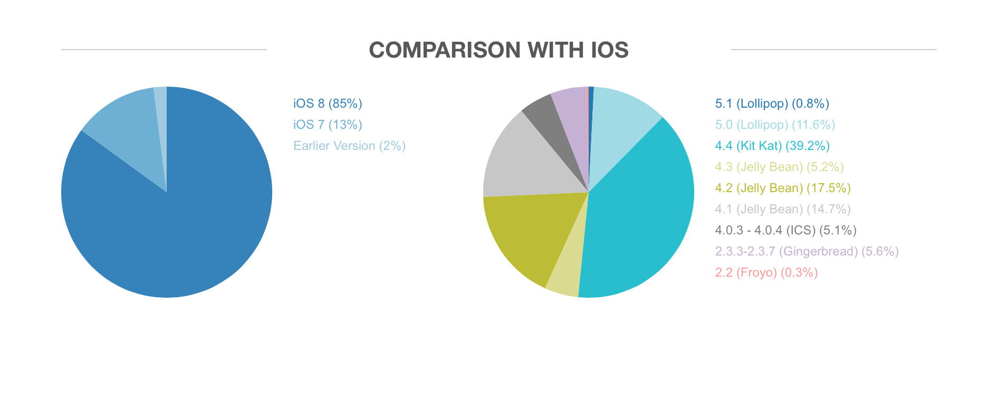 <small>http://thenextweb.com/insider/2015/08/05/this-is-what-android-fragmentation-looks-like-in-2015/</small> --- ## Summary - Focus on Mobile Chrome and Mobile Safari - Legacy support is painful - Android Fragmentation is a problem - [Safari is the new IE since Google dropped WebKit](http://nolanlawson.com/2015/06/30/safari-is-the-new-ie/) --- <blockquote class="twitter-tweet" lang="de"><p lang="en" dir="ltr">If Apple are throttling back on web platform work in Safari, I wish they'd allow other browsers on iOS so someone else can have a go</p>— Jake Archibald (@jaffathecake) <a href="https://twitter.com/jaffathecake/status/612992537238896641">22. Juni 2015</a></blockquote> --- # 4. A biased view on the Web <img src="./assets/img/netscape.gif" /> --- ## The Web is slow --- ## JavaScript is Slow --- ## How fast is JavaScript? TL;DR: _Very_ fast ...it doesn't matter, because JS is not the bottleneck --- ## ASM.js - efficient subset of JavaScript - suitable for ahead of time optimizing compilation --- ## Emscripten - LLVM to JavaScript compiler (to ASM.js) - compile C++ into JS and use it on the web - see http://www.quakejs.com/ --- ## WebApps are slow --- ## "Fast" depends heavily on your Architecture --- ## Use Web Workers - runs scripts in background thread - doesn't block the main thread execution (UI) --- ## Reduce Load Time - Reduce, optimize and compress your resources - add lazy loading --- ## UI Responsiveness --- ## 300 ms Click Delay <iframe width="760" height="428" src="https://www.youtube.com/embed/AjUpiwvIa5A" frameborder="0" allowfullscreen></iframe> --- ## 300 ms Click Delay - recognize tap vs. double-tap - added 300 ms delay - removed in "App Mode" on Mobile Chrome - Libraries like fastclick can be used to solve the problem --- ## Rendering is slow --- - DOM access is slow - Images are slow and use precious RAM --- ## Rendering is slow - optimize Images - take care of your CSS - use accelerated Animations --- ## The UI is not "native" - there are Frameworks for "native" styling - Consistency within of the App is more important than of the Platform - Take care of platform specific features - i.e Context Menu on Android --- ## Poor Developer Experience --- ## Great IDEs --- ## Atom 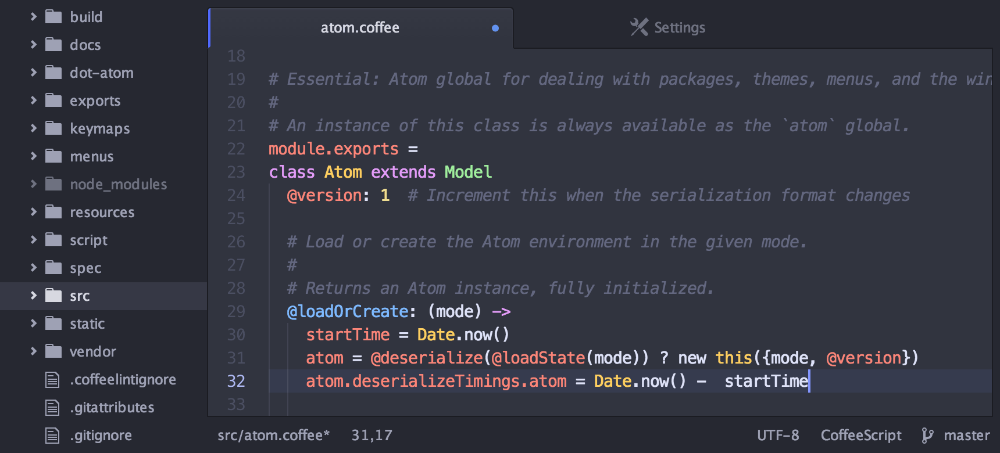 --- ## WebStorm 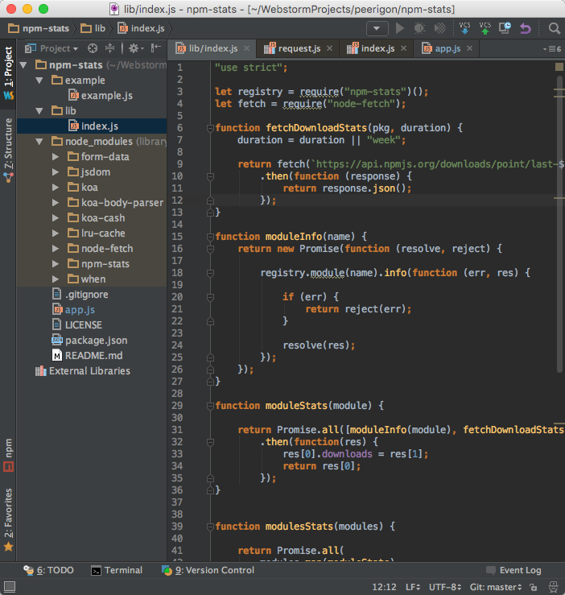 --- ## Debugging is painful --- ## Not anymore - Web Inspector - Universal Inspector (Firefox) --- 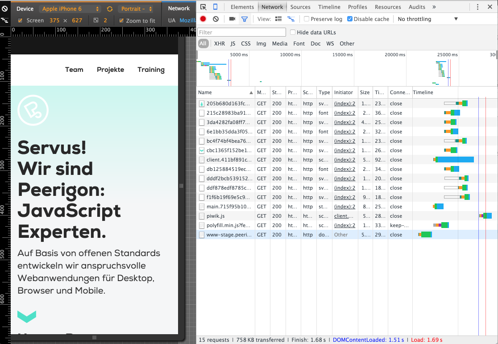 --- 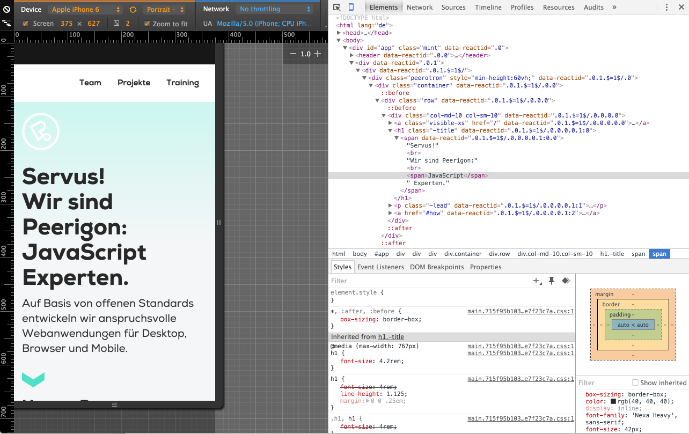 --- 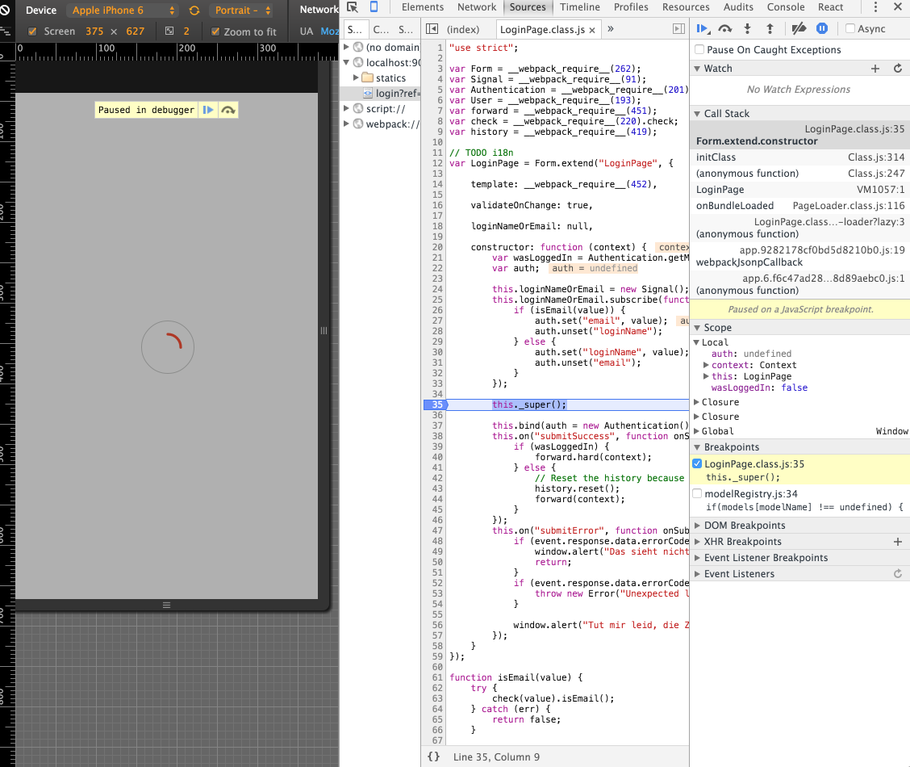 --- 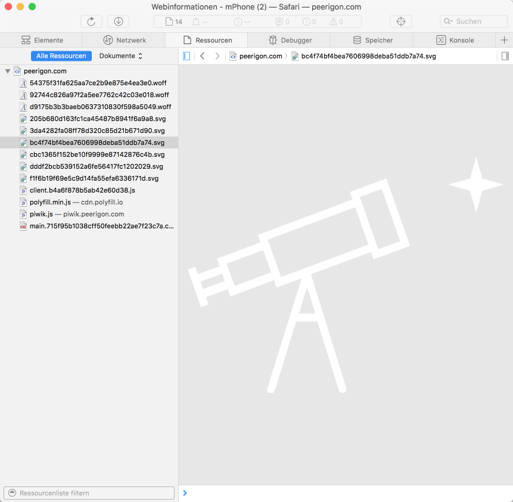 --- ## Everything is inline... --- ## Modular ```javascript import "../shared/styles/main.less"; import React from "react"; import Router from "react-router"; import { cookie } from "browser-cookie-lite"; import { isDev, isStage } from "../shared/lib/env" import routes from "../shared/routes"; import PiwikHelper from "../shared/lib/PiwikHelper"; import ContextProvider from "../shared/components/ContextProvider"; import determineLocale from "../client/lib/determineLocale"; ``` --- ## ES 2015 ```javascript const context = { lang: determineLocale(), page: () => resolvePageFromPath(document.location.pathname) }; const Client = ( <ContextProvider {...context}> {() => <Router history={createBrowserHistory()} routes={routes} />} </ContextProvider> ); PiwikHelper.init(cookie, cookie); if (!PiwikHelper.isDeclined()) { Piwik .init(PiwikHelper.instanceUrl, PiwikHelper.getSiteId()) .loadScript() .catch((err) => () => { if (isDev || isStage) { throw err; } }); } React.render(Client, document.body); ``` --- ## Web-Apps can't be used offline - Application Manifest - ServiceWorker - LocalStorage / SessionStorage - IndexedDB --- ## ServiceWorker - proxy server that sits between app and the browser - intercept network requests and customize responses - easy way to handle caching - granular control over actions --- ## I can't access the .... --- ## ... camera --- ## [Mediacapture Stream](http://www.w3.org/TR/mediacapture-streams/) 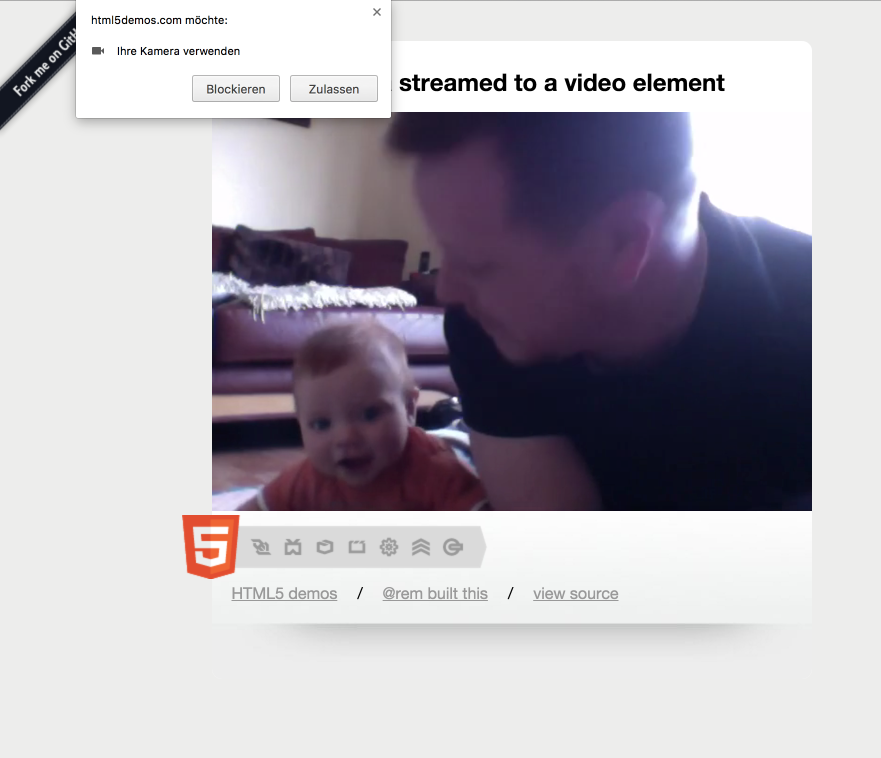 --- ## ... geolocation 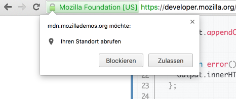 --- 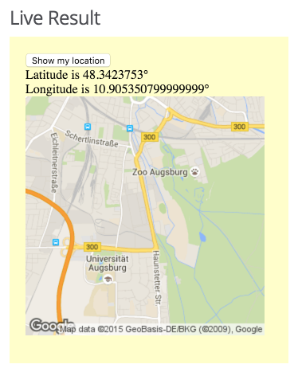 --- ## geolocation works on... - Android Browser - Firefox - Mobile Safari - Mobile Chrome --- ## I can't use crypto.. --- ## WebCrypto - Android Browser - Mobile Chrome - Mobile Safari <small>http://caniuse.com/#search=crypto</small> --- ## ... --- ## Permissions? - permissions asked by the browsers - and the manifest for hosted apps --- ## I can't send notifications --- ## Yes, you can! [Notifications API](https://developer.mozilla.org/en-US/docs/Web/API/Notifications_API) <img src="assets/img/notification-bubble.png" /> - [Spec](http://www.w3.org/TR/2015/REC-notifications-20151022/) --- - Android Webview - Firefox OS - Mobile Chrome --- ## I can't access the AppStore/PlayStore see next Slides... --- # 5. Marketplaces vs. OpenWeb <small>http://fuckyeahreactiongifs.tumblr.com/post/9041021691</small> --- ## Do you really like the Marketplaces? --- ## Censoring >“The Chaos Computer Club in Frankfurt developed a tvOS application to bring talks from its media.ccc.de portal to Apple TV. Apple refused to release the app and took offense at the content.” <small>https://unthoughted.wordpress.com/2015/10/31/apple-verbietet-inhalte-vom-chaos-computer-club-auf-ihrer-plattform/</small> --- ## "Angels Share" - You get 70% of sales revenue. - This means: Apple get's 30 % <small>https://developer.apple.com/programs/whats-included/</small> --- ## Review Process / Painful Updates - takes up to a week - on every update <small>http://www.reddit.com/r/AskReddit/comments/r98mk/reddit_what_is_your_favorite_reaction_gif/</small> --- ## How should they find your App? --- ## + Simple Monetization --- ## + "Security" by Reviews --- # Hybrid Apps --- ## Definition of Terms II --- <img src="./assets/img/google-webapps.png"/> <small>>http://developer.android.com/guide/webapps/index.html</small> --- ## Hosted Web-App >A hosted app is an Open Web App that has all of its resources (HTML, CSS, JavaScript, app manifest and so on) stored on a Web server. <small>https://developer.mozilla.org/en-US/Marketplace/Options/Hosted_apps</small> --- ## Packaged Web-App >A packaged app is an Open Web App that has all of its resources (HTML, CSS, JavaScript, app manifest, and so on) contained in a zip file, instead of having its resources on a Web server. <small>https://developer.mozilla.org/en-US/Marketplace/Options/Packaged_apps</small> --- ## Hybrid Packaged Web-App --- # 6. The Future of Apps --- --- # 7. Conclusion --- # What should you do? - Web is the future - improving constantly - suitable for most apps - target all devices, even the onces you don't know about yet - make it hybrid if you need to --- >"Maybe I’m an idealist, but I think we should be able to build most apps with web tech. The platform has come a long way" Henrik Joreteg (@HenrikJoreteg) --- # Questions? ---